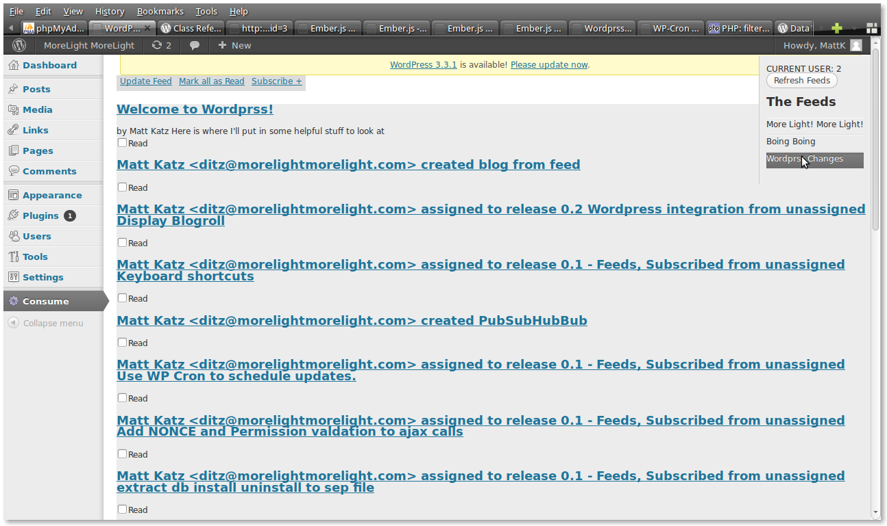

I think that you should reduce the distance between reading and writing. Tumblr, Facebook, and Twitter have all proven the importance of being able to re-share easily the things you love. Wordpress has a nice "Blog This" bookmarklet but it is just another step to take.
Instead, I'd like to bring a feed reader into Wordpress that lets you blog from your blogroll.
That's a lot of work to do. I'm going to take a stab at it, but I'd love your help. Let's make wordpress even better.
Right now I've got a list of feeds and selecting a feed brings up entries in that feed.
In your wordpress Admin Screen:
If you want the very latest code, ssh into your plugins directory and clone the project with Git by running:
$ git clone git://github.com/mattkatz/Orbital-Feed-Reader
Contributing is easy!
gem install ditzIf you don't like Ditz, that's fine - GitHub issues work too.
Let's keep it decentralized! I'm using Ditz to track bugs. You can always use the github issue tracker, but check out what ditz gives you.
MattKatz on identi.ca or the tweeter or at morelightmorelight.com
{kind=link}